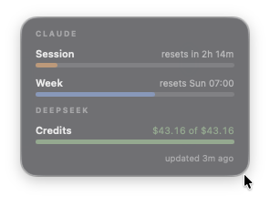
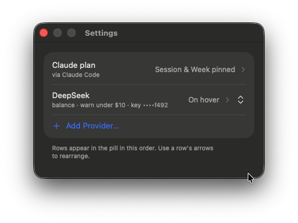
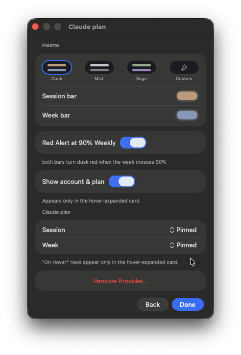

A tiny menu-bar widget that keeps your Claude plan windows and every API balance in view — always on top.
One pill. Every meter you care about.
Your 5-hour session and weekly limits, live — so you always know how much headroom is left before you hit a wall.
DeepSeek, OpenRouter, MiniMax, OpenAI spend — paste a key, tap the number you recognize, and it tracks the rest.
It reads your Claude sign-in through Apple's own keychain helper — no password prompts, and it never alters or refreshes your login.
A real menu-bar app — Developer-ID signed and notarized by Apple, so it opens cleanly with no security warnings.
Real screenshots — the pill, and the settings behind it.



No account, no setup wizard. Just drag and go.
Grab the disk image from the latest release.
Open the image and drop Usage Pill onto the Applications shortcut.
Open it from your menu bar and set up your meters from the gear.